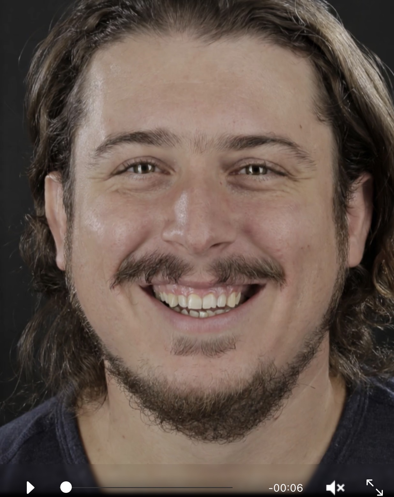
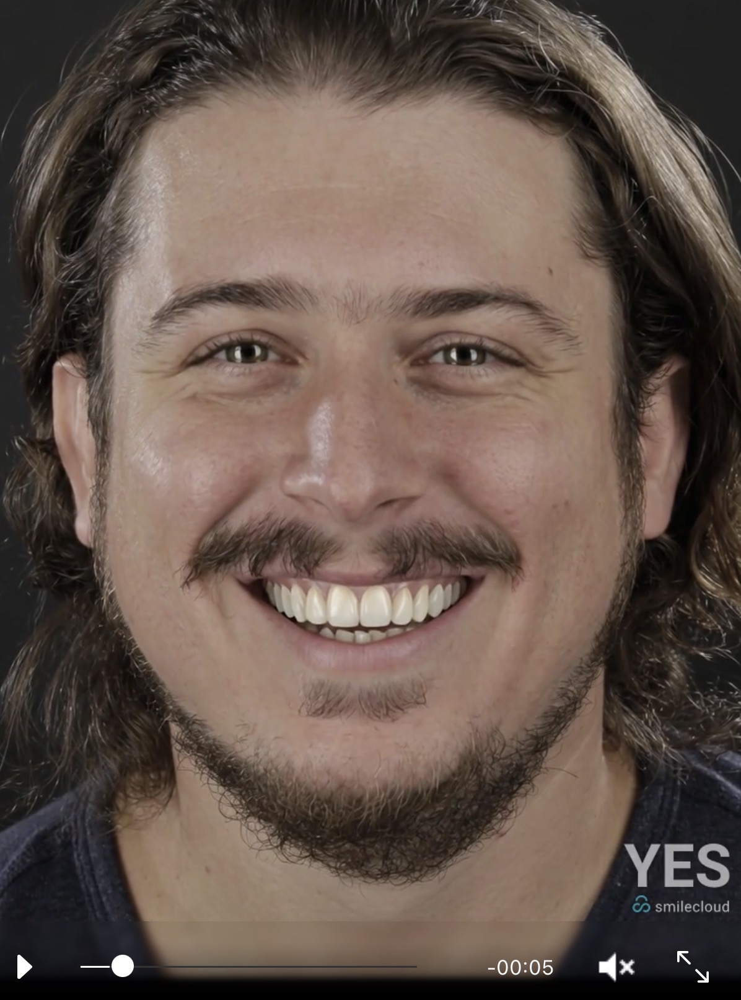
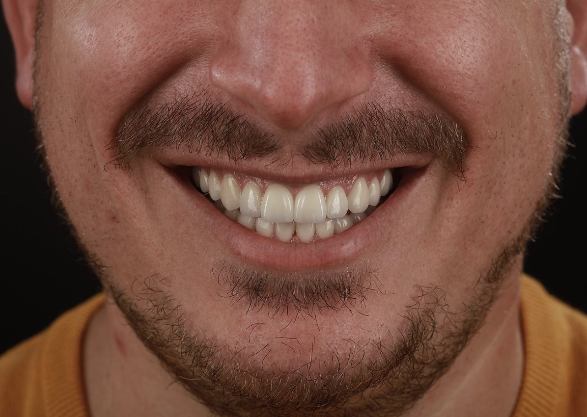

CFAO
Caméra optique
Flux numérique
20 ANS DE
NUMÉRIQUE
NUMÉRIQUE
ET SI ON EN PARLAIT VRAIMENT ?
27 juin 2026 — Élégance Formation — Journée complète
Dr BAHMED Karim
Chirurgien-Dentiste · Roubaix
8 ans de numérique
Avec la participation de Simon Desprez — Laboratoire Technident
Dr Karim Bahmed — Formation Dentisterie Numérique
1 / 95
Présentation
Qui je suis
Chirurgien-Dentiste — Roubaix — 8 ans de numérique

Dr Karim Bahmed
Chirurgien-Dentiste · Roubaix
8 ans de pratique numérique — par conviction clinique
Praticien du quotidien : réalité du fauteuil, pas du marketing
Ce soir : partage d'expérience, forces ET limites honnêtes
N'hésitez pas à m'interrompre — on est entre confrères
“
On est entre confrères. C'est un échange, pas une démonstration.
— Dr Bahmed
Qui est déjà équipé d'une caméra intra-orale ?
Programme
Programme de la journée
MATIN — 8H30 À 12H30
Histoire & évolution — de Duret à l’IA
La caméra intra-orale — technologies & choix
Le geste de scan — stratégie & erreurs
Le flux numérique — CFAO Directe, Indirecte, Semi-Directe
Matériaux & communication laboratoire
Vision du prothésiste — ce que le labo voit
Erreurs de scan — cas concrets & corrections
Gestion des tissus — PTFE, cordon, laser, cas cliniques
IA & Smile Design — ce qui est prouvé
APRÈS-MIDI — TP
Atelier 1 — Scan en direct sur mannequin
Atelier 2 — Simulation cas clinique guidée
Atelier 3 — Manipulation libre
Atelier 4 — Analyse d'erreurs de scan
QCM final — 15 questions avec corrections
Section 01
Histoire &
Évolution
Évolution
De Duret à aujourd’hui
Histoire & Origines
LE PIONNIER — Pr François Duret
1973 — L'acte de naissance de la dentisterie numérique


Pr François DURET
Père de la dentisterie numérique
“
En 1973, j'ai voulu que la dent soit conçue par ordinateur... on m'a ri au nez.
CHRONOLOGIE 1/3 — 1973-1986
PHASE 1 — LES PIONNIERS
Des premières démonstrations à la 1ère couronne numérique
Thèse Duret
CFAO dentaire
CFAO dentaire
Caméra
profilométrie
profilométrie
Caméra v2
profilométrie
profilométrie
1973
1977
Caméra interférométrie
1983
1984
1ère démo CFAO directe
1985
1986
Caméra
interférométrie
interférométrie
1ère démo
CFAO directe
CFAO directe
CEREC Lemon
1ère couronne 20'
1ère couronne 20'


Pr Duret — 1973
CEREC — 1986
Möermann & Brandestini
Möermann & Brandestini
1ère couronne numérique — 20 minutes
CEREC Lemon — Möermann & Brandestini — Zürich, 1986
5b / 95
CHRONOLOGIE 2/3 — 1986-2010
PHASE 2 — L'EXPLOSION COMMERCIALE
De la 1ère commercialisation aux caméras portatives
1er CEREC
commercial
commercial
Acquisition
par contact
par contact
Nouvelles
caméras opt.
caméras opt.
Modèle CAO
colorisé
colorisé
1986
1993
1er système intégré
1997
2003
Modélisation 3D surfacique
2005
2007
Entités biogénériques
2009
2010
1er système
commercialisé
commercialisé
Modélisation
3D surfacique
3D surfacique
Entités
biogénériques
biogénériques
Caméra
portative
portative

CEREC 3 Redcam — 2005
De la poudre blanche au scan couleur
15 ans pour passer de l'acquisition contact aux caméras portatives
5c / 95
CHRONOLOGIE 3/3 — 2010-2024
PHASE 3 — IA, RÉALITÉ AUGMENTÉE & AVATAR
La dentisterie numérique entre dans l'ère de l'intelligence
Caméra
sans fil
sans fil
Scan
sans poudre
sans poudre
Réalité
augmentée
augmentée
DSD
numérique
numérique
2010
2012
2014
Scan couleur HD
2017
2018
Intelligence artificielle
2022
2024
Scan
couleur
couleur
Intelligence
artificielle
artificielle
Avatar
patient 3D
patient 3D

Caméra sans fil
Liberté totale au fauteuil
Réalité augmentée
Scan + visage en temps réel
Intelligence artificielle
Morphologie auto + diagnostic IA

Avatar patient 3D
CBCT + scan + photo + Modjaw fusionnés
5d / 95
CONTEXTE
Pourquoi passer au numérique aujourd'hui ?
20 ans de promesses — et maintenant, la maturité clinique
Équivalence prouvée
4 études 2019-2025
90% préfèrent le scan
Satisfaction patient
Envoi en secondes
Flux numérique
Archivage à vie
STL = preuve numérique
Simulation avant usinage
Zéro surprise à la pose
Moins de reprises
ROI 8-14 mois
Équivalence prouvée
Mangano et al. 2020
Eur J Oral Implantol — revue systématique
équivalence numérique/conventionnel à 5 ans de suivi
Ender et al. 2019
Int J Computerized Dentistry
stratégie de scan = clé de la précision (80 µm max)
Tang et al. 2020
J Clinical Medicine — comparatif 5 caméras
confocale sup. de 18 µm sur grandes portées
Umbrella Review Cureus 2025
10 revues, 30+ scanners, 2020-2025
TRIOS 3 & Primescan supérieurs au conventionnel
Eur J Oral Implantol — revue systématique
équivalence numérique/conventionnel à 5 ans de suivi
Ender et al. 2019
Int J Computerized Dentistry
stratégie de scan = clé de la précision (80 µm max)
Tang et al. 2020
J Clinical Medicine — comparatif 5 caméras
confocale sup. de 18 µm sur grandes portées
Umbrella Review Cureus 2025
10 revues, 30+ scanners, 2020-2025
TRIOS 3 & Primescan supérieurs au conventionnel
90% préfèrent le scan
Wismeijer et al. 2014
Clin Oral Implants Research — étude randomisée
90% préfèrent le scan optique
Lee & Gallucci 2013
Clin Oral Implants Research
confort perçu ×2 supérieur
Vasudavan et al. 2010
Am J Orthod Dentofacial Orthop
77% préférence pour le scan digital
Yuzbasioglu et al. 2014 — BMC Oral Health
zéro nausée, zéro alginate
Clin Oral Implants Research — étude randomisée
90% préfèrent le scan optique
Lee & Gallucci 2013
Clin Oral Implants Research
confort perçu ×2 supérieur
Vasudavan et al. 2010
Am J Orthod Dentofacial Orthop
77% préférence pour le scan digital
Yuzbasioglu et al. 2014 — BMC Oral Health
zéro nausée, zéro alginate
Envoi en secondes
Fichier STL : 5-15 Mo par arcade
Standard Tessellation Language — format universel
Envoi : email, 3Shape Unite, Medit Link, Dental Wings Connect
Notification labo en temps réel
Joda & Brägger 2015
Clin Oral Implants Research
réduction temps clinique de 23%
Zéro déformation • Zéro transport • Zéro perte
Standard Tessellation Language — format universel
Envoi : email, 3Shape Unite, Medit Link, Dental Wings Connect
Notification labo en temps réel
Joda & Brägger 2015
Clin Oral Implants Research
réduction temps clinique de 23%
Zéro déformation • Zéro transport • Zéro perte
Archivage à vie
Mangano et al. 2017
Dent Materials — revue workflow digital
traçabilité complète du flux numérique
Archivage illimité
vs empreinte physique : dégradation en 2-5 ans (ADA)
modèles 3D consultables à vie
Valeur médico-légale
Preuve numérique horodatée, non altérable
Le plâtre casse. Le STL reste.
Dent Materials — revue workflow digital
traçabilité complète du flux numérique
Archivage illimité
vs empreinte physique : dégradation en 2-5 ans (ADA)
modèles 3D consultables à vie
Valeur médico-légale
Preuve numérique horodatée, non altérable
Le plâtre casse. Le STL reste.
Simulation avant usinage
Coachman et al. 2022
J Esthet Restor Dent — Digital Smile Design
mock-up 3D imprimé testé en bouche
Joda & Brägger 2017
J Prosthodont Research
réduction reprises de 62% avec validation digitale
Corrections AVANT usinage
Le patient voit son résultat avant de s'engager
Zéro surprise à la pose
J Esthet Restor Dent — Digital Smile Design
mock-up 3D imprimé testé en bouche
Joda & Brägger 2017
J Prosthodont Research
réduction reprises de 62% avec validation digitale
Corrections AVANT usinage
Le patient voit son résultat avant de s'engager
Zéro surprise à la pose
Moins de reprises
−80% retouches à la pose
Expérience personnelle — 8 ans de pratique numérique
Joda & Brägger 2015
Clin Oral Implants Research
gain de temps clinique 35 min/cas en moyenne
Albeniz et al. 2022
J Prosthod — analyse coût-efficacité
ROI scanner : 8-14 mois selon volume de cas
Expérience personnelle — 8 ans de pratique numérique
Joda & Brägger 2015
Clin Oral Implants Research
gain de temps clinique 35 min/cas en moyenne
Albeniz et al. 2022
J Prosthod — analyse coût-efficacité
ROI scanner : 8-14 mois selon volume de cas
L'argument que personne n'ose dire
Le numérique, c'est aussi l'image de votre cabinet
L'effet WAW

Le patient entre, voit l'écran, la caméra, son modèle 3D.
91.9% préfèrent un praticien équipé en numérique
77.6% acceptent de payer plus cher
90.7% pensent que le résultat esthétique est meilleur
Dodi et al. 2025 — Dentistry Journal — 597 patients
91.9% préfèrent un praticien équipé en numérique
77.6% acceptent de payer plus cher
90.7% pensent que le résultat esthétique est meilleur
Dodi et al. 2025 — Dentistry Journal — 597 patients
Les freins — débat avec la salle
« J'ai pas le budget »
ROI 8-14 mois — Albeniz 2022, J Prosthod
« Mon prothésiste ne veut pas »
Les prothésistes sont les premiers à travailler en numérique — parlez-lui
« Je suis trop vieux pour apprendre »
Courbe de 3-6 mois — Mangano 2020
« Le silicone marche très bien »
Oui — mais vos patients préfèrent le scan à 90%
France : ~40% équipés (UFSBD/Comident 2023) • Nordiques : >60% (PMR 2024)
Le mouvement est irréversible. La question c'est quand.
Section 02
La Caméra
Intra-Orale
Intra-Orale
Le premier maillon de toute la chaîne numérique
Technologies de capture
Comment fonctionne une caméra intra-orale ?
Triangulation active
Un motif lumineux est projeté sur la dent.
Une caméra décalée mesure l'angle de retour.
La profondeur est calculée par trigonométrie.
Une caméra décalée mesure l'angle de retour.
La profondeur est calculée par trigonométrie.
+ Rapide, léger, économique
− Limité en zones profondes
Medit • Panda • Shining 3D • anciens TRIOS
Confocal
Un diaphragme (pinhole) filtre la lumière.
Seul le plan focal exact passe.
Le scanner reconstitue la surface couche par couche.
Seul le plan focal exact passe.
Le scanner reconstitue la surface couche par couche.
+ Précis en zones profondes
− Plus lourd, plus coûteux
iTero • TRIOS 5/6 • Primescan 2
En 2026, la différence est devenue marginale pour 90% des cas
L'IA compense les faiblesses des deux technologies • Le choix se fait sur l'ergonomie et le logiciel
Ender & Mehl 2019 • Tang et al. 2020
Principes optiques
Les 3 technologies de capture
TRIANGULATION
Projection lumineuse + capteur
Calcul géométrique 3D
Calcul géométrique 3D
CONFOCALE
Analyse par plans de focalisation
Sélection des zones nettes
Sélection des zones nettes
STÉRÉOPHOTO
Images sous plusieurs angles
Reconstruction par points communs
Reconstruction par points communs
Quel que soit le principe optique, la précision finale dépend aussi du tracking, du stitching et des algorithmes de reconstruction.
Comparatif
Les 3 technologies en un coup d'oeil
| Critère | Triangulation | Confocale | Stéréophoto. |
|---|---|---|---|
| Précision | ★★★★ | ★★★★★ | ★★★★★ |
| Vitesse | ★★★★★ | ★★★★ | ★★★ |
| Poids | Léger | Moyen | Lourd |
| Sensibilité humidité | Élevée | Modérée | Faible |
| Prix | €€ | €€€€ | €€€€€ |
| Usage courant | Idéal | Possible | Spécialisé |
La meilleure caméra = celle que vous comprenez et que vous maîtrisez.
Choix caméra
Comment choisir sa caméra ? Les 5 questions clés
1
< 20 prothèses/mois → triangulation suffit
> 50/mois → investir en confocale se justifie
> 50/mois → investir en confocale se justifie
2
Implants unitaires → triangulation ou confocale
Full-arch → envisager photogrammétrie
Full-arch → envisager photogrammétrie
3
Vérifier compatibilité avec votre labo
Système ouvert (STL) vs fermé (propriétaire)
Système ouvert (STL) vs fermé (propriétaire)
4
Tester en main : poids, câble, angle d'attaque
L'ergonomie impacte directement la fatigue
L'ergonomie impacte directement la fatigue
5
Support technique local crucial
Formation initiale + accompagnement = clé du succès
Formation initiale + accompagnement = clé du succès
Toutes les caméras ont de l'IA en 2026
L'IA est un vrai critère de choix.
Mais attention aux pièges.
Mais attention aux pièges.
01
Détection caries + usure en temps réel
TRIOS Dx Plus • iTero NIRI • +66% sensibilité
TRIOS Dx Plus • iTero NIRI • +66% sensibilité
02
Filtrage auto langue / joue / gants
Toutes les marques • même Panda à 9 990€
Toutes les marques • même Panda à 9 990€
03
Détection limites de prép
CEREC 5.3 • Primescan 2 • -32% remakes
CEREC 5.3 • Primescan 2 • -32% remakes
04
Design couronne deep learning
3Shape AI Automate • 146 sec vs 584 sec
3Shape AI Automate • 146 sec vs 584 sec
05
Guidage novice = expert
Heatmap d'incertitude • même résultat pour tous
Heatmap d'incertitude • même résultat pour tous
Luke & Rezallah 2025, J Dent • Negi 2024, Clin Exp Dent Res • Frontiers Dent Med 2025
Toutes les marques ont l'IA
3Shape TRIOS 6
Dx Plus • +110% résolution • IA reconstruction
iTero Lumina
6 modules simultanés • NIRI • IA guidage
Medit i900
AI Suite • SmartX • Margin Lines auto
Panda Smart
IA filtrage + guidage • 138g • àp. 9 990€
Attention — limites documentées
• Spécificité : 11% à 98% selon les systèmes (Luke 2025)
• Faux positifs : risque de surdiagnostic et surtraitement
• L'IA ne détecte pas l'activité de la lésion
• Faux positifs : risque de surdiagnostic et surtraitement
• L'IA ne détecte pas l'activité de la lésion
L'IA aide. Mais elle peut aussi halluciner.
Surinterpretation, corrections exagérées, faux positifs caries — vérifiez toujours. Et comparez aussi le SAV.
Surinterpretation, corrections exagérées, faux positifs caries — vérifiez toujours. Et comparez aussi le SAV.
Méta-analyse
Head & Face Medicine — Avril 2025 — Open Access — 21 études cliniques analysées
Luke & Rezallah — L'IA détecte-t-elle vraiment les caries ?
« Accuracy of artificial intelligence in caries detection: a systematic review and meta-analysis »

11%
Spécificité la plus basse
= 89% de faux positifs
98%
Spécificité la meilleure
selon le système utilisé
I²=90%
Hétérogénéité massive
résultats très variables
Citation de l'étude
« Dans les populations à faible prévalence carieuse, une spécificité insuffisante pourrait entraîner des interventions non justifiées. »
Traduction clinique
L'IA est un outil d'aide, pas un diagnostic final. Surdiagnostic = surtraitement = perte de confiance patient. Votre oeil clinique reste le dernier mot.
Section 03
Le Geste
Le Scan
Le Scan
La stratégie qui fait toute la différence
Ender et al., 2019 — Int J Comput Dent
80 µm
de déviation — juste à cause du chemin de scan
« La caméra explique 20% de la variance.
La stratégie de scan explique 80%. »
La stratégie de scan explique 80%. »
80 µm = l'épaisseur d'un cheveu
C'est la différence entre un bridge qui s'assoit
et un bridge qu'on retouche 20 minutes.
Indépendamment de la caméra utilisée.
et un bridge qu'on retouche 20 minutes.
Indépendamment de la caméra utilisée.
L'ordre qui réduit l'erreur
1. Occlusales d'abord — ancrage spatial
2. Vestibulaire — faces visibles
3. Lingual — faces internes
4. Interproximales — sonde à 45°
2. Vestibulaire — faces visibles
3. Lingual — faces internes
4. Interproximales — sonde à 45°
L'amélioration est entre vos mains — pas dans votre portefeuille.
CAS RÉEL FILMÉ AU CABINET
Le chemin de scan
Cas réel filmé au cabinet — Panda Smart
GESTE
Les 5 erreurs de geste les plus courantes
⚠
Perte de suivi → zones grises
⚠
Perte de champ → artefacts
⚠
Redoublement de données
⚠
Zones non comblées
⚠
Interproximales manquées
Règle d'or
Zéro zone bleue avant validation. Retour systématique aux occlusales en cas de perte.


Section 05
Le Flux
Numérique
Numérique
Une chaîne — pas une magie
WORKFLOW — EVIDENCE
Le flux numérique : résultats cliniques prouvés
Source : Mangano et al., 2020 — Eur J Oral Implantol | Mangano et al., 2017 — BMC Oral Health
1
SCAN
Caméra optique
→
2
CONCEPTION
Logiciel CAO
→
3
FABRICATION
Usinage/CNC
→
4
CONTRÔLE
Essayage
→
5
POSE
Résultat final

Evidence :
Mangano 2020 : aucune différence de survie flux numérique vs conventionnel (suivi 5 ans, 150+ restaurations). Ce qui différencie = maîtrise du protocole.
LE FLUX NUMÉRIQUE — DE LA LUMIÈRE À LA PROTHÈSE
Chaque étape est un maillon — aucun n'est négligeable

Étude Mangano 2020
Aucune différence de survie entre flux conventionnel et flux numérique — quand le protocole est maîtrisé.
La règle d'or
« Le premier maillon est le plus important »
Les 3 flux possibles
CFAO Directe (Chairside) — CFAO Indirecte (Labside) — CFAO Semi-Directe
Le numérique ouvre plusieurs chemins — choisissez le bon selon le cas clinique
D
Directe (Chairside)
Tout au fauteuil — 1 séance
Scan + conception + usinage au cabinet
Inlays, onlays, couronnes unitaires
CEREC, Planmill, usineuses compactes
Patient repart avec sa prothèse
Inlays, onlays, couronnes unitaires
CEREC, Planmill, usineuses compactes
Patient repart avec sa prothèse
Temps : 1h30 à 2h30 / séance
I
Indirecte (Labside)
Envoi au laboratoire — 2+ séances
Scan + envoi STL au prothésiste
Bridges, facettes, cas complexes
Stratification céramique, finitions main
Qualité esthétique maximale
Bridges, facettes, cas complexes
Stratification céramique, finitions main
Qualité esthétique maximale
Le flux dominant en 2026
S
Semi-Directe
Conception labo, usinage cabinet
Le dentiste envoie le STL au laboratoire
Le prothésiste réalise la modélisation 3D
Il renvoie le fichier STL au dentiste
Le dentiste usine au cabinet
Le prothésiste réalise la modélisation 3D
Il renvoie le fichier STL au dentiste
Le dentiste usine au cabinet
Formule rare — le labside reste le flux dominant
Flux complet — Carole, 52 ans
Bridge dento-porté — Du scan à la pose
Édentement bilatéral maxillaire — Piliers 21-22-25 et 11-12-13-15 — Zircone stratifiée — 2 séances
Panda Smart
Logiciel Panda
Zircone 5Y
Stratification VITA
Résultat validé — Zéro retouche
Cas clinique Carole
De l’empreinte à la conception prothétique
Ce que le dentiste ne voit pas toujours — 7 min 30
Semi-Directe
Le flux semi-direct — conception labo, fabrication cabinet
Le prothésiste conçoit la restauration — ou le dentiste planifie l’implant et le prothésiste conçoit le guide
Guides chirurgicaux
CBCT + scan optique fusionnés
Planification implantaire 3D
Guide imprimé en résine biocompatible
Précision : 0,5 mm au lieu de 2+ mm à main levée
Planification implantaire 3D
Guide imprimé en résine biocompatible
Précision : 0,5 mm au lieu de 2+ mm à main levée
Modèles & dies
Remplacement des modèles en plâtre
Précision < 50 µm
Dies amovibles pour contrôle limites
Coût : 3 à 5 € de résine par modèle
Précision < 50 µm
Dies amovibles pour contrôle limites
Coût : 3 à 5 € de résine par modèle
Provisoires
Résine imprimée biocompatible
Bridges provisoires jusqu’à 6 éléments
Ajustage immédiat sans retouche
Patient repart avec un sourire dès la 1re séance
Bridges provisoires jusqu’à 6 éléments
Ajustage immédiat sans retouche
Patient repart avec un sourire dès la 1re séance
Gouttières & aligneurs
Gouttières occlusales, contention, blanchiment. Aligneurs ortho in-house avec logiciel de staging.
Porte-empreintes individuels
PEI imprimés pour les cas où le conventionnel reste nécessaire (PAC, édenté complet).
Investissement
Imprimante dentaire : 3 000 à 15 000 €. Consommables : 50 à 150 €/L. ROI en 3 à 6 mois.
Flux implantaire
Le numérique change tout en implantologie
De la planification à la prothèse définitive — un flux 100% guidé
1
CBCT
Anatomie osseuse 3D
→
2
Scan optique
Surface muqueuse + dents
→
3
Fusion + planif
Logiciel implantaire
→
4
Guide imprimé
Impression 3D cabinet
→
5
Chirurgie guidée
Pose précise + rapide
→
6
Prothèse
Provisoire immédiat + définitif
Chirurgie guidée vs main levée
Déviation angulaire : 3,5° guidé vs 7,1° main levée
Déviation apicale : 1,2 mm guidé vs 2,4 mm main levée
Temps chirurgical : -40% en moyenne
Source : Tahmaseb 2018 — IJP — méta-analyse 20 études
Déviation apicale : 1,2 mm guidé vs 2,4 mm main levée
Temps chirurgical : -40% en moyenne
Source : Tahmaseb 2018 — IJP — méta-analyse 20 études
Mise en charge immédiate (MCI)
Le numérique rend la MCI prévisible :
• Scan pré-op pour provisoire pré-fabriqué
• Guide avec clé de positionnement
• Provisoire usiné ou imprimé posé le jour même
Le patient ne sort jamais édenté
• Scan pré-op pour provisoire pré-fabriqué
• Guide avec clé de positionnement
• Provisoire usiné ou imprimé posé le jour même
Le patient ne sort jamais édenté
Guide implantaire
De la planification au forage guidé
Planification 3D, conception du guide, impression et chirurgie guidée — 3 min
Scanbodies — Le maillon implantaire
Qu’est-ce qu’un scanbody et pourquoi c’est précis
Hodan 2025 (28 études), Huang 2020, Camarta 2024 — données publiées
Définition clinique
Dispositif vissé sur l’implant dont la géométrie codée (formes asymétriques, facettes, rainures) permet au scanner de capturer :
• La position 3D de l’implant
• L’axe et la rotation
• Le logiciel superpose le scan au STL de la bibliothèque → position virtuelle exacte
• La position 3D de l’implant
• L’axe et la rotation
• Le logiciel superpose le scan au STL de la bibliothèque → position virtuelle exacte
Camarta et al. 2024 — Dentistry J.
Précision documentée
Implant unitaire : 10,7 à 13,9 µm
Arcade complète : 35-38 µm (standard)
Avec extension : 28 µm
Seuil acceptable : 59-72 µm
Arcade complète : 35-38 µm (standard)
Avec extension : 28 µm
Seuil acceptable : 59-72 µm
Hodan 2025 (28 études) • Huang 2020
Pièges à éviter
Serrage : 10 N.cm max (PEEK)
Angulation > 15° → précision dégradée
Exposition < 6 mm → trueness insuffisante
Toujours VISSÉ — jamais positionné
Angulation > 15° → précision dégradée
Exposition < 6 mm → trueness insuffisante
Toujours VISSÉ — jamais positionné
Gimenez 2015 • Jang 2023
iPhysio — LYRA ETK — Le 3-en-1
Pilier de cicatrisation + scanbody + provisoire — reste en bouche sans dévissage. Précision : 49,9 µm de déviation 3D. Compatible Biotech, Anthogyr, InterActive. Librairies : 3Shape, Exocad, Dental Wings.
Étude ScienceDirect 2025 — coded healing abutments
Cas Malika B. — 52 ans
Scanbodies vissés — Empreinte sur implants


Librairie intégrée
Panda Smart + lib. Bioteck → reconnaissance auto de l’axe implantaire. Vérifiez TOUJOURS que votre caméra intègre la librairie de votre implant.
Pas d’entrelacement ici
Contrairement au cas Reda, les scanbodies 36-37 sont suffisamment espacés. Un seul scan, validation immédiate.
Empreinte profil d’émergence
Le scanbody capture la position implantaire. Le profil d’émergence est enregistré numériquement pour guider la conception prothétique.
Synthèse — Données cliniques
Quel flux pour quel cas ?
Basé sur études cliniques — Mangano 2020, Tahmaseb 2018, Galletto 2025, Kim 2022
Chirurgie guidée vs main levée
Déviation : 2,57° guidé vs 7,46° main levée
Apex : 0,88 mm vs 2,22 mm
Galletto 2025 — 55 études
Apex : 0,88 mm vs 2,22 mm
Galletto 2025 — 55 études
Provisoire imprimé vs conventionnel
Résistance fracture : 1 243 N imprimé vs 559 N conv.
Flexion : 141 MPa vs 88 MPa
Alam 2022, Pantea 2022
Flexion : 141 MPa vs 88 MPa
Alam 2022, Pantea 2022
Gouttière imprimée vs thermoformée
Précision ±0,1 mm : 96,25% imprimée vs 75% thermo.
Reproductibilité supérieure (ET plus faible)
Kim 2022 — Korean J Orthod
Reproductibilité supérieure (ET plus faible)
Kim 2022 — Korean J Orthod
LOGICIELS DE CONCEPTION
Les logiciels utilisés par les prothésistes
Ce que votre prothésiste utilise pour concevoir vos restaurations à partir de vos fichiers STL
exocad DentalCAD
Le plus répandu en France et dans le monde
Toutes restaurations : couronnes, bridges, inlays, implants
Système ouvert — compatible avec toutes les caméras
Bibliothèques dentaires très complètes
Utilisé par la majorité des laboratoires français
Système ouvert — compatible avec toutes les caméras
Bibliothèques dentaires très complètes
Utilisé par la majorité des laboratoires français
3Shape Dental Designer
Référence haut de gamme
Conception avancée + simulation esthétique
Très utilisé avec les scanners TRIOS
Smile Design intégré pour les cas antérieurs
Plateforme 3Shape Unite pour envoi direct
Très utilisé avec les scanners TRIOS
Smile Design intégré pour les cas antérieurs
Plateforme 3Shape Unite pour envoi direct
Ce que vous devez retenir
Vous n’avez pas besoin de maîtriser ces logiciels — c’est le travail du prothésiste. Mais vous devez savoir lire un STL avant de l’envoyer : vérifier les limites, repérer les zones bleues, contrôler les contacts proximaux. 2 minutes de vérification évitent 1 heure de retouche.
MATÉRIAUX — DONNÉES 2024
Quel matériau pour quelle situation ?


Tendance 2025 — Multilayer
Un seul bloc gradient 3Y→5Y : résistance en cervical, translucidité en incisale. Katana UTML, e.max ZirCAD Prime, VITA YZ XT. Monolithique > facettée : 2,1% vs 13,6% chipping (Baconguis 2024).
e.max = gold standard esthétique
Mordancable HF → collage fiable sans rétention mécanique. 93,2% survie à 15 ans (Solimani 2023). Facettes : 98,2% à 10 ans.
Composite = protège l'antagoniste
Usure émail antagoniste 3 à 5x inférieure vs céramique. Idéal pour onlays sur dent vivante, patients bruxistes légers.
LABO NUMÉRIQUE
Communiquer avec le laboratoire numérique
Le numérique ne remplace pas la communication — il l'exige encore plus

Toujours envoyer des photos de teinte en lumière naturelle + fichier scan

Enregistrement de l'occlusion, guide antérieur, courbe de Spee

Teinte de base, teinte col, caractérisations souhaitées, photo de référence

Prévoir un retour logiciel avant fabrication — valider le design en 3D
Section 07
Vision du
Laboratoire
Laboratoire
Comprendre ce que le prothésiste voit
Vision du laboratoire
Ce que le prothésiste voit
quand il ouvre votre scan
quand il ouvre votre scan
Intervention d'un prothésiste dentaire — cas réels de son quotidien
● Il reçoit un fichier STL ou un scan couleur
● Il n'a PAS accès au contexte clinique
● Il voit immédiatement : trous, artefacts, limites floues
● Il ne peut PAS inventer ce qui manque
● Sa conception dépend entièrement de votre scan
● Il n'a PAS accès au contexte clinique
● Il voit immédiatement : trous, artefacts, limites floues
● Il ne peut PAS inventer ce qui manque
● Sa conception dépend entièrement de votre scan
« Le prothésiste ne peut pas inventer une limite qui n'existe pas dans le scan. »
« Quelques dixièmes de millimètre invisibles cliniquement deviennent critiques numériquement. »
« Le but n'est pas de scanner vite. Le but est de transmettre une information exploitable. »
CAS 1
Vision du laboratoire
Empreintes trop engrainées
Quand l'occlusion verrouille le scan — le prothésiste ne peut pas exploiter le modèle
Ce que le labo voit
Modèle figé en inter-cuspidation
Faces vestibulaires masquées
Trous palatins et linguaux
Faces vestibulaires masquées
Trous palatins et linguaux
Solution praticien
Scanner chaque arcade séparément
Mordu occlusal dédié
Vérifier le 3D avant envoi
Mordu occlusal dédié
Vérifier le 3D avant envoi
CAS 3
Vision du laboratoire
Artefacts de salive — L'humidité détruit les limites
Excès de salive = surplombs parasites = limites invisibles pour le prothésiste
En silicone, la salive était repoussée mécaniquement. En numérique, le scanner capture TOUT ce qu'il voit — y compris le film de salive.
Ce que le labo voit
Excroissances numériques au cervical
Limite réelle masquée sous les artefacts
Zones rouges/sombres = saignement + salive
Limite réelle masquée sous les artefacts
Zones rouges/sombres = saignement + salive
Solution praticien
Aspiration continue pendant le scan
Séchage méthodique avant chaque zone
Hémostatique aluminium au sulcus
Séchage méthodique avant chaque zone
Hémostatique aluminium au sulcus
CAS 5
Vision du laboratoire
Artefacts illisibles — Scan inexploitable
Le prothésiste ne peut ni lire ni redessiner la limite — nouvelle empreinte requise
SCAN INEXPLOITABLE — NOUVELLE EMPREINTE REQUISE
Causes multiples
Humidité + saignement + mouvement
Erreur de stitching (assemblage)
Résidus hémostatiques non rincés
Erreur de stitching (assemblage)
Résidus hémostatiques non rincés
Solution praticien
Zoomer sur chaque limite avant envoi
Si artefacts visibles : rescanner
2 min de plus = 1 semaine gagnée
Si artefacts visibles : rescanner
2 min de plus = 1 semaine gagnée
Vision du laboratoire
Correction
des Limites
des Limites
Comment le prothésiste rectifie ce qu’il ne voit pas
Message clé
Rectification
= Supposition
Quand le prothésiste corrige vos limites,
il suppose. Il ne voit pas.
il suppose. Il ne voit pas.
Chaque supposition = perte de précision
La qualité se joue au fauteuil, pas au laboratoire
La qualité se joue au fauteuil, pas au laboratoire
Synthèse
Les 6 problèmes les plus fréquents vus du labo
Six problèmes. Six solutions. Aucune n'est compliquée. Toutes exigent de la rigueur.
Checklist qualité
Avant d'envoyer — 7 vérifications en 60 secondes
Chaque point non validé = un risque de retour labo
✓
Arcade complète — Tourner le modèle 3D à 360°, vérifier qu'il n'y a pas de trous
✓
Limites cervicales — Zoomer sur chaque préparation, nettes et continues
✓
Pas d'artefacts — Aucune zone brillante ou bruitée au niveau cervical
✓
Gencive rétractée — La limite est visible, pas recouverte
✓
Occlusion enregistrée — Mordu occlusal séparé, pas d'inter-cuspidation forcée
✓
Photos de teinte — Photo en lumière naturelle envoyée avec le scan
✓
Note clinique — Contexte, teinte, caractérisations, limites particulières
60 secondes de vérification au fauteuil = 1 semaine gagnée sur le cas.
Collaboration
Le praticien et le laboratoire forment une seule équipe
Ce que le prothésiste attend
Un scan complet, propre, limites lisibles
Photos de teinte en lumière naturelle
Un contexte clinique (note de travail)
Communication ouverte en cas de doute
Photos de teinte en lumière naturelle
Un contexte clinique (note de travail)
Communication ouverte en cas de doute
Ce que le praticien doit comprendre
Le labo ne corrige pas un scan défaillant
« Se débrouiller » = contre-productif
Retour labo = temps perdu pour tous
Bon scan = conception rapide et fiable
« Se débrouiller » = contre-productif
Retour labo = temps perdu pour tous
Bon scan = conception rapide et fiable
Scan qualité
→
Conception précise
→
Fabrication fidèle
→
Pose sans retouche
→
Patient satisfait
« Le numérique a rendu la communication praticien-labo plus exigeante, mais aussi plus transparente. »
« Les meilleurs résultats naissent d'une collaboration étroite, pas d'un envoi anonyme de fichier STL. »
« Quand le praticien comprend les contraintes du labo, et que le labo comprend les réalités cliniques, tout le monde progresse. »
Section 08
Erreurs &
Clés
Clés
Les pièges — Les bonnes pratiques
⚠
Les 4 erreurs de scan
Champ non préparé
Gencive enflammée → saignement → artefacts cervicaux
Fil rétracteur + astringent + laser diode si besoin
Geste aléatoire
Chemin non reproductible → déviation ±80 µm (Ender 2019)
Occlusales → vestibulaire → lingual → interprox.
Isolation négligée
Buée + salive → réflexions parasites au cervical
Aspiration continue + séchage + distance 1-2 cm
Validation sans contrôle
Zones bleues ignorées → retour labo garanti
Zéro zone bleue avant validation — tourner le 3D à 360°
3 sur 4 concernent le terrain gingival — c’est là que tout se joue
Erreur en pratique — Cas Reda M.
Scan posts entrelacés — Inlay-clavette 26


L’erreur
Les scan posts de 26 et 27 sont trop proches — ils s’entrelacent géométriquement.
Si vous les positionnez en même temps → le logiciel ne peut pas les distinguer.
Même principe pour les scanbodies sur implants adjacents.
Si vous les positionnez en même temps → le logiciel ne peut pas les distinguer.
Même principe pour les scanbodies sur implants adjacents.
La solution — Mode entrelacé
1. Scanner le 1er scan post seul → valider
2. Retirer le 1er, poser le 2nd → scanner
3. Le logiciel fusionne les deux prises
Panda : cocher « Tige entrelacée / interférente »
2. Retirer le 1er, poser le 2nd → scanner
3. Le logiciel fusionne les deux prises
Panda : cocher « Tige entrelacée / interférente »
Résultat — Cas Reda M.
Mode entrelacé → 2 scan posts matchés


Inlay-cores / clavettes
Scan posts adjacents trop proches → toujours mode entrelacé
Scanbodies implants
Même principe — si les scanbodies se chevauchent, scanner un par un
Règle universelle
Si deux éléments se chevauchent → les scanner séparément, le logiciel fusionne
80%
des erreurs viennent
du terrain gingival
du terrain gingival
Expérience clinique — 8 ans
3 min
de gestion tissulaire
= 20 min gagnées en retouche
= 20 min gagnées en retouche
La solution à la plupart de ces erreurs ?
Maîtriser les tissus.
Maîtriser les tissus.
C'est le sujet de la prochaine section.
Section 04
Gestion
des Tissus
des Tissus
Comprendre les tissus avant de scanner
Préservation tissulaire
Le chaînon manquant entre préparation, empreinte et esthétique
La gencive marginale n'est pas un obstacle à contourner — c'est un tissu biologique vivant
La tentation fréquente
Limite difficile à visualiser → descendre davantage avec la fraise.
Préparation cervicale agressive → limite visible.
Mais au prix d'un capital tissulaire qui ne reviendra jamais.
Préparation cervicale agressive → limite visible.
Mais au prix d'un capital tissulaire qui ne reviendra jamais.
La vraie question
La question n'est pas : « la gencive va-t-elle cicatriser ? »
La vraie question est : « va-t-elle cicatriser exactement à sa position initiale ? »
Une gencive traumatisée peut s'amincir, migrer apicalement, perdre sa stabilité, évoluer vers une récession — parfois des mois après la préparation.
La vraie question est : « va-t-elle cicatriser exactement à sa position initiale ? »
Une gencive traumatisée peut s'amincir, migrer apicalement, perdre sa stabilité, évoluer vers une récession — parfois des mois après la préparation.
Orkin et al. — 1987
Limites supra-gingivales vs sous-gingivales :
×2,42 saignement gingival
×2,65 récessions gingivales
autour des limites sous-gingivales
×2,42 saignement gingival
×2,65 récessions gingivales
autour des limites sous-gingivales
Bader et al. — 1991 — 831 patients
Limites sous-gingivales = davantage de :
• Inflammation gingivale
• Profondeur de sondage
• Complications parodontales
Une limite cachée n'est pas toujours biologiquement neutre.
• Inflammation gingivale
• Profondeur de sondage
• Complications parodontales
Une limite cachée n'est pas toujours biologiquement neutre.
Reitemeier — revue systématique : les limites proches des tissus mous présentent davantage de complications parodontales lorsqu'elles sont mal contrôlées.
Chaque fois que nous descendons sous la gencive, nous augmentons notre responsabilité biologique.
Phénotype parodontal
Tous les tissus mous ne réagissent pas de la même façon
Classification Jepsen, Caton, Albandar et al. — J Periodontol 2018

Fin et festonné
Gencive fine et fragile
Feston marqué, papilles longues
Dents triangulaires
Os vestibulaire souvent mince
Haut risque : récessions fréquentes
Chaque coup de fraise cervical est potentiellement plus lourd de conséquences
Feston marqué, papilles longues
Dents triangulaires
Os vestibulaire souvent mince
Haut risque : récessions fréquentes
Chaque coup de fraise cervical est potentiellement plus lourd de conséquences
Épais et festonné
Gencive épaisse, feston marqué
Papilles plus larges
Bonne résilience tissulaire
Meilleure tolérance clinique
Risque modéré : surveiller l'inflammation
Papilles plus larges
Bonne résilience tissulaire
Meilleure tolérance clinique
Risque modéré : surveiller l'inflammation
Épais et plat
Gencive épaisse, fibreuse
Feston peu marqué, dents carrées
Os vestibulaire épais
Tolère mieux les préparations
Pardonne davantage nos erreurs
Mais davantage de poches et d'hyperplasie
Feston peu marqué, dents carrées
Os vestibulaire épais
Tolère mieux les préparations
Pardonne davantage nos erreurs
Mais davantage de poches et d'hyperplasie
La meilleure préparation n'est pas celle que nous réalisons.
C'est celle que le phénotype du patient est capable de supporter durablement.
C'est celle que le phénotype du patient est capable de supporter durablement.
Diagnostic clinique
Identifier le phénotype — Le test de transparence
Avant de choisir votre technique de rétraction, identifiez le biotype — tout en découle

La sonde parodontale transparaît à travers la gencive → phénotype fin
Le test
Insérer la sonde parodontale dans le sulcus.
Si la sonde est visible par transparence → phénotype fin.
Si la sonde est invisible → phénotype épais.
Si la sonde est visible par transparence → phénotype fin.
Si la sonde est invisible → phénotype épais.
Si fin → Protocole doux
PTFE seul ou technique mixte
Préparation ultra atraumatique
Temporisation si nécessaire
Chaque micron compte
Préparation ultra atraumatique
Temporisation si nécessaire
Chaque micron compte
Si épais → Plus de latitude
Cordon + PTFE possible
Meilleure tolérance mécanique
Surveiller l'inflammation
Ne pas confondre tolérance et négligence
Meilleure tolérance mécanique
Surveiller l'inflammation
Ne pas confondre tolérance et négligence
Concept moderne (Zucchelli) : au-delà de fin/épais, évaluer aussi l'épaisseur gingivale, la largeur de gencive kératinée et l'épaisseur osseuse vestibulaire. Deux patients « épais » peuvent avoir des comportements biologiques différents.
Le numérique ne pardonne pas les tissus instables
STL bruités • Limites peu lisibles • Fluides sulculaires • Rebond gingival

STL problématique
Sang sur la limite — zones d'ombre sur le modèle 3D

Limite masquée
Gencive recouvre la limite — invisible pour le prothésiste

Coloration
Coloration noire — lecture optique compromise
Le numérique est une dentisterie de précision… mais aussi une dentisterie du propre.
Ma première erreur : croire au « produit miracle »
Première approche : les pâtes de rétraction

Pâte de rétraction
Pâte mal éliminée — limite complètement invisible

Coloration
Coloration noire due à la pâte mélangée au sang

Limite illisible
Aspect noir sur la limite — lecture optique compromise
Objectifs escomptés
Arrêt du saignement • Ouverture gingivale • Simplicité
« Je ne vois pas clairement les limites. »
Mon prothésiste — régulièrement
Cas Omar — Piège classique
Le sang s'arrête ≠ l'empreinte est réussie
38 ans — Dent 16 — Carie plancher mésio-palatin — Saignement abondant — Laser SOGA + provisoire


Le piège que TOUS les dentistes font
La pâte astringente arrête le saignement.
Vous vous dites : « c'est bon, je peux scanner ».
FAUX. L'hémostase n'est pas la gestion tissulaire. Le sang s'arrête, mais :
• Le profil d'émergence est déformé
• Le bourgeon gingival masque la limite
• Le scanner lit une surface irrégulière
Vous vous dites : « c'est bon, je peux scanner ».
FAUX. L'hémostase n'est pas la gestion tissulaire. Le sang s'arrête, mais :
• Le profil d'émergence est déformé
• Le bourgeon gingival masque la limite
• Le scanner lit une surface irrégulière
Ce qu'il fallait faire (et que j'ai fait)
1. Laser diode — remodeler le profil d'émergence
2. Coaguler + ouvrir le sulcus
3. Pâte astringente ENSUITE
4. Scan < 90 secondes
2. Coaguler + ouvrir le sulcus
3. Pâte astringente ENSUITE
4. Scan < 90 secondes
Gencive carbonisée = illisible
Si le laser brûle trop → gencive noire, surface irrégulière. Le scanner ne peut PAS lire ça. Temporisation provisoire obligatoire — attendre 48-72h de cicatrisation.
Cas Omar — Le protocole complet
Laser → Pâte → Scan < 90s — OU — Laser → Provisoire → 48h
1
Diagnostic : le sang coule
Pâte seule = insuffisant. Le bourgeon gingival déforme le profil d'émergence.
2
Laser diode SOGA — Remodeler, pas couper
980 nm / 1,5 W / CW / fibre PF4. Vaporiser le bourgeon. Recréer le profil d'émergence.
?
Vérifier : gencive rose ou carbonisée ?
Rose / propre
Pâte astringente
Scan < 90 secondes
Couronne définitive
Pâte astringente
Scan < 90 secondes
Couronne définitive
Noire / carbonisée
NE PAS SCANNER
Provisoire PMMA
Revenir à 48-72h
NE PAS SCANNER
Provisoire PMMA
Revenir à 48-72h
4
Résultat Omar : couronne zircone 0 retouche
Gencive rose après laser. Scan immédiat. Profil d'émergence correct → ajustage parfait.

Écran SOGA — 980 nm / 1,5 W / CW
Règle d'or
Saignement arrêté ≠ empreinte réussie
Profil d'émergence correct = empreinte réussie
Profil d'émergence correct = empreinte réussie
Le vrai tournant : comprendre le biotype gingival
Ma grande erreur : appliquer le même protocole à tous les patients
Le problème : même protocole pour tout le monde
Le cordon imprégné donne le meilleur déplacement (0,66 mm) mais la plus forte perte gingivale à 1 mois.
El Ashry 2025 — J Dentistry — RCT
El Ashry 2025 — J Dentistry — RCT
La solution : adapter au biotype
Le seuil critique : 0,2 mm d'ouverture sulculaire minimum pour une empreinte lisible. L'épithélium est endommagé à 1 N/mm et rompu à 2,5 N/mm.
Chauhan 2025 — PMC — Soft tissue management review
Chauhan 2025 — PMC — Soft tissue management review
Avant de choisir votre technique de rétraction…
identifiez le biotype. Tout en découle.
identifiez le biotype. Tout en découle.
Biotype fin stable
PTFE seul
Ouverture douce
Protection gingivale
Effet étanche
Respect biologique maximal
Protection gingivale
Effet étanche
Respect biologique maximal
Biotype épais instable
Cordon fin + PTFE
Stabilisation mécanique
Contrôle du rebond gingival
Maintien de la fenêtre biologique
Contrôle du rebond gingival
Maintien de la fenêtre biologique
El Ashry 2025, J Dentistry (RCT) • Chauhan 2025, PMC
Stabiliser plutôt qu'agresser
Ma philosophie actuelle
Si micro-saignement
Astringedent raisonné
Avec cordon ou seul selon les cas.
Le but n'est pas de brûler les tissus.
Le but est de stabiliser.
Le but n'est pas de brûler les tissus.
Le but est de stabiliser.
Le but n'est pas d'ouvrir plus.
Le but est de stabiliser.
Le but est de stabiliser.
Temporisation indispensable
Parodonte fragile
Bourgeon gingival
Profil d'émergence instable
Inflammation persistante
Bourgeon gingival
Profil d'émergence instable
Inflammation persistante
Outils : provisoires, provisoires labo, laser diode léger
“
Parfois, la meilleure rétraction… c'est simplement le temps.
Loi & Di Felice
Cas Mr Selim — 44 ans
PTFE sur 14 vs Cordon sur 25


PTFE sur 14 : protection douce, zéro chimie. Restera en place pendant le scan.
Cordon sur 25 : rétraction mécanique classique. Restera aussi pendant le scan.
Aides optiques : préparation périphérique contrôlée, évite de léser la gencive.
Résultat — PTFE laissé en place
Téflon et cordon laissés pendant le scan


PTFE laissé en place — Ruggiero 2025
90% des cas : ligne de finition visible
90% : expansion ≥ 0,2 mm (seuil lisible)
Zéro saignement induit
Pas de rebond → pas de course contre la montre
90% : expansion ≥ 0,2 mm (seuil lisible)
Zéro saignement induit
Pas de rebond → pas de course contre la montre
Ruggiero, Nuytens, Lo Russo et al. 2025 — J Dentistry
PTFE vs Cordon — Étude clinique 2024
Déplacement : 188,7 µm (PTFE) vs 184,2 µm (cordon)
Meilleur contrôle du saignement
Facilité d’application supérieure
PTFE = au moins équivalent au cordon
Meilleur contrôle du saignement
Facilité d’application supérieure
PTFE = au moins équivalent au cordon
ResearchGate 2024 — PTFE vs Retraction Cord Clinical Study
Pourquoi laisser en place
Pas de retrait → pas de rebond
Pas de chimie → pas de coloration
Pas de fenêtre 90s → scan serein
Le prothésiste voit la transition dent/gencive
Pas de chimie → pas de coloration
Pas de fenêtre 90s → scan serein
Le prothésiste voit la transition dent/gencive
Technique mixte
PTFE puis pâte astringente
Quand le téflon seul ne suffit pas
Quand le téflon seul ne suffit pas
1
PTFE en place
Protection pendant
la préparation
la préparation
→
2
Saignement malgré PTFE
Biotype fin instable
= sang remonte
= sang remonte
→
3
Retrait + pâte
Astringent pour arrêter
le sang + maintenir l’espace
le sang + maintenir l’espace
→
4
Scan < 90s
Fenêtre ouverte
le sang va remonter
le sang va remonter
Chaque biotype, son protocole — la vidéo qui suit montre cette technique en direct
Verti'Prep
Une approche tissulaire guidée
La technique Verti'Prep repose sur le concept BOPT d'Ignazio Loi — Ce n'est pas nouveau.
Définition
Élimination de la jonction émail-cément (JEC) afin de recréer un profil d'émergence biomimétique au sein de l'attache supra-crestale.
Guidant ainsi la cicatrisation gingivale et la maturation tissulaire.
Guidant ainsi la cicatrisation gingivale et la maturation tissulaire.
IL
Dr Ignazio Loi — Cagliari, Sardaigne
BOPT créé dès 2008 • Publié avec Di Felice en 2013
Le Verti'Prep est la technique qui en découle — enseignée en faculté
Le Verti'Prep est la technique qui en découle — enseignée en faculté
Zone clé — Attache supra-crestale
Épithélium sulculaire
Attache épithéliale
JEC — Jonction émail-cément
Attache conjonctive
= Attache supra-crestale
Le Vertiprep intervient dans cette zone
Objectif biologique
Guider la cicatrisation gingivale, favoriser l'épaississement tissulaire, améliorer la stabilité marginale
Objectif prothétique
Limite invisible, profil d'émergence biomimétique, résultat esthétique supérieur
Changement de philosophie
Ne plus contourner la gencive — la guider. Accompagner la cicatrisation plutôt que la subir.
Préparation clinique
Les 3 étapes de la Vertiprep
1
Ouverture sulculaire
Fraise flamme pointe mousse
Bague verte (125 µm) — 15°
La pointe entre dans le sulcus
C'est la fraise qui guide
Pas de PTFE — la pointe mousse repousse l'attache sans la couper
Bague verte (125 µm) — 15°
La pointe entre dans le sulcus
C'est la fraise qui guide
Pas de PTFE — la pointe mousse repousse l'attache sans la couper
2
Élimination de la JEC
Fraise flamme pointe mousse
Bague verte (125 µm) — parallèle au grand axe
Suppression du bombement cervical
Plan incliné continu, pas de congé
Bague verte (125 µm) — parallèle au grand axe
Suppression du bombement cervical
Plan incliné continu, pas de congé
3
Polissage minutieux
Fraise flamme bague rouge (30 µm)
Toute la surface préparée
Surface lisse = cicatrisation optimale
Zéro irrégularité résiduelle
Toute la surface préparée
Surface lisse = cicatrisation optimale
Zéro irrégularité résiduelle
ATTENTION : Fraise à pointe mousse obligatoire. Sans pointe mousse, la fraise coupe l'attache au lieu de la repousser — ce n'est plus du Vertiprep, c'est une agression tissulaire. Les 3 étapes sont réalisées sur les 4 faces axiales.
Temporisation
La coiffe provisoire façonne le profil d'émergence
Rebasage & polissage
Rebasage au
composite flow
composite flow
Mise en forme
et polissage
et polissage
Cicatrisation guidée
Le caillot sanguin est stabilisé par la coiffe provisoire.
Elle guide la cicatrisation gingivale et initie un nouveau profil d'émergence.
Temporisation 1-2 mois
Elle guide la cicatrisation gingivale et initie un nouveau profil d'émergence.
Temporisation 1-2 mois
Le protocole
1. Clé en silicone pré-opératoire
2. Couronne provisoire (PMMA ou Bis-Acrylique)
3. Rebasage au composite flow pour épouser le sulcus
4. Polissage précis des marges
5. Scellement provisoire
6. Contrôle occlusion et points de contact
2. Couronne provisoire (PMMA ou Bis-Acrylique)
3. Rebasage au composite flow pour épouser le sulcus
4. Polissage précis des marges
5. Scellement provisoire
6. Contrôle occlusion et points de contact
Temporisation
1 à 2 mois
Maturation tissulaire complète
Le caillot sanguin est stabilisé par la coiffe transitoire. Elle guide la cicatrisation gingivale et initie un nouveau profil d'émergence.
La temporisation n'est pas une option — c'est le coeur de la technique. Sans elle, pas de Vertiprep.
Empreinte & laboratoire
C'est le prothésiste qui définit la limite
Avant détourage
Ligne bleue = bord gingival
Après détourage
Lignes verte et rouge
Bleu
Bord gingival avant détourage
Vert
« Ligne d'arrivée » du prothésiste — la limite idéale
Rouge
Limite la plus apicale — ne pas dépasser
« Zone de finition »
Entre les lignes bleu et rouge.
C'est dans cette zone que le prothésiste place sa limite — invisible et parfaitement intégrée.
C'est dans cette zone que le prothésiste place sa limite — invisible et parfaitement intégrée.
Différence fondamentale
En préparation conventionnelle, la limite est dictée par le praticien.
En Vertiprep, c'est le prothésiste qui définit la limite en fonction du profil d'émergence stabilisé.
En Vertiprep, c'est le prothésiste qui définit la limite en fonction du profil d'émergence stabilisé.
Conséquence
La réussite dépend d'une collaboration étroite praticien-prothésiste.
Photos, vidéos, échanges sur le profil souhaité. Sans cette communication, le Vertiprep échoue.
Photos, vidéos, échanges sur le profil souhaité. Sans cette communication, le Vertiprep échoue.
Honnêteté clinique
Le Vertiprep est UNE solution — pas LA solution
QUAND LE VERTIPREP EST INDIQUÉ
Phénotype fin — crée un épaississement tissulaire (+33%)
Antérieur esthétique — limites invisibles
Reprise de couronne — récession existante, dyschromie
Coloration radiculaire — le guidage tissulaire peut la couvrir
Triangles noirs — fermeture par profil d'émergence
QUAND NE PAS FAIRE DE VERTIPREP
Maladie paro active — contre-indication absolue
Lithium disilicate — 39% fracture marginale (que zircone/métal)
Piliers courts — rétention insuffisante
Prothésiste non formé — sans labo formé, ça échoue
Patient non disponible — temporisation 1-2 mois obligatoire
Le congé / épaulement reste le meilleur choix quand :
• Postérieur non esthétique
• Matériau = e.max / disilicate
• Matériau = e.max / disilicate
• Temps clinique limité
• Pas de nécessité de remodelage gingival
• Pas de nécessité de remodelage gingival
• Labo non formé Verti'Prep
• Cas simple sans enjeu tissulaire
• Cas simple sans enjeu tissulaire
Le débat n'est pas Congé ou Vertiprep.
Le véritable débat est : quel est le meilleur choix pour CE patient, CE phénotype, CETTE situation ?
Le véritable débat est : quel est le meilleur choix pour CE patient, CE phénotype, CETTE situation ?
Message clé
Les études nous montrent que la réussite d'une couronne ne dépend pas uniquement de la qualité de la préparation ou de la céramique.
Elle dépend également de notre capacité à préserver et stabiliser les tissus mous qui entourent cette restauration.
Elle dépend également de notre capacité à préserver et stabiliser les tissus mous qui entourent cette restauration.
Une belle couronne se juge le jour de la pose.
Une belle gencive se juge
dix ans plus tard.
dix ans plus tard.
C'est cette stabilité tissulaire qui constitue aujourd'hui l'un des véritables critères de succès en dentisterie restauratrice moderne.
Et cette stabilité commence dès le premier coup de fraise.
Et cette stabilité commence dès le premier coup de fraise.
Section 07
L’Ère de
la Donnée
la Donnée
L’IA en dentisterie : ce qui est prouvé, ce qui arrive
3 niveaux d'intelligence
L'IA ne vous assiste plus. Elle travaille.
Pendant le scan
Détection caries temps réel
Filtrage tissus mous auto
Guidage heatmap d'incertitude
Róth 2025 : +66% sensibilité vs bitewing
Filtrage tissus mous auto
Guidage heatmap d'incertitude
Róth 2025 : +66% sensibilité vs bitewing
Après le scan
Reconstruction mesh automatique
Nettoyage artefacts
Fusion multi-empreintes
Ce que vous ne voyez pas, l'IA le corrige
Nettoyage artefacts
Fusion multi-empreintes
Ce que vous ne voyez pas, l'IA le corrige
La conception
Design couronne deep learning
146s vs 584s technicien (4x)
Détection limites de prép auto
L'IA dessine — vous validez
146s vs 584s technicien (4x)
Détection limites de prép auto
L'IA dessine — vous validez
Résultat mesuré
Novice = Expert (guidage IA) • -32% remakes • 4x plus rapide en conception
Straumann rachète AlliedStar (2023)
Le premium suisse valide la tech IA chinoise
Smile Design numérique
Smile Cloud — Quand l'IA dessine le sourire
Analyse faciale dynamique, simulation esthétique et communication patient
Ce que Smile Cloud permet
Analyser le sourire statique ET dynamique
Position des lèvres, phonétique
Simuler un futur sourire en temps réel
Générer des projets esthétiques réalistes
Partager avec le patient ET le laboratoire
Position des lèvres, phonétique
Simuler un futur sourire en temps réel
Générer des projets esthétiques réalistes
Partager avec le patient ET le laboratoire
Pour le patient
Il visualise au lieu d'imaginer
Il comprend mieux son projet esthétique
Il adhère plus facilement au traitement
Il se sent impliqué dans les décisions
Il comprend mieux son projet esthétique
Il adhère plus facilement au traitement
Il se sent impliqué dans les décisions
Pour le labo
Référence visuelle claire du projet
Cohérence attentes patient / réalisation
Meilleure communication praticien-prothésiste
Cohérence attentes patient / réalisation
Meilleure communication praticien-prothésiste
Cas Smile Cloud — Photos
Avant traitement vs Simulation IA

Situation initiale
→

Simulation Smile Cloud
Cas Smile Cloud — Vidéo
Sourire initial vs Simulation IA
Confrontation IA vs Réalité
Simulation IA vs Résultat clinique réel
Simulation numérique
vs

Résultat clinique
La simulation guide. La clinique réalise. Ce n'est pas la même chose.
Conclusion Smile Design
Le numérique améliore la communication — pas la biologie
Le numérique améliore énormément la compréhension, la visualisation, la communication et la planification esthétique.
C'est un outil de communication, d'analyse et de collaboration avec le laboratoire. Pas un générateur magique de sourire parfait.
Gardez une approche clinique, réaliste, biologique et humaine. Derrière le numérique, il y a toujours un patient réel.
Section 10
Travaux
Pratiques
Pratiques
4 ateliers pour ancrer les compétences
🎓
Ateliers
Après-midi — 4 ateliers pratiques
Section 11
Évaluation
Finale
Finale
15 questions — QCM + cas cliniques
📋
QCM — Q1/15
En quelle année François Duret a-t-il présenté sa thèse sur la CFAO dentaire ?
A. 1995 — avec son premier iPhone
B. 1973 — à Lyon, 288 pages
✔
C. 2005 — en même temps que YouTube
D. 1812 — juste après Napoléon
Réponse : B
1973. Il avait 28 ans. Ses confrères l'ont regardé comme s'il débarquait de Mars.
QCM — Q2/15
Selon Ender 2019, quelle déviation peut générer un mauvais chemin de scan ?
A. 5 µm — invisible
B. 800 µm — un canyon
C. Jusqu'à 80 µm — l'épaisseur d'un cheveu
✔
D. Ça dépend de la couleur de la caméra
Réponse : C
80 µm. Indépendamment de la caméra utilisée. La stratégie explique 80% de la variance.
QCM — Q3/15
Par quelles faces faut-il commencer le scan ?
A. Vestibulaires — c'est plus joli
B. Linguales — pour le challenge
C. Occlusales — ancrage spatial
✔
D. On commence par le café, pas par le scan
Réponse : C
Les occlusales fournissent l'ancrage spatial. Le logiciel établit ses repères à partir de cette surface.
QCM — Q4/15
Que provoque le sang sur un scan numérique ?
A. Il donne un joli rendu rouge au STL
B. Il génère des artefacts et masque les limites
✔
C. Aucun impact — l'IA corrige tout
D. Il ralentit la caméra de 50%
Réponse : B
Le sang absorbe la lumière et crée des zones d'ombre. Les limites prothétiques deviennent illisibles.
QCM — Q5/15
Selon Ruggiero 2025, quel pourcentage de cas montre des limites visibles avec le PTFE laissé en place ?
A. 50% — une chance sur deux
B. 75% — pas mal
C. 90% — quasi systématique
✔
D. 100% — dans mes rêves
Réponse : C
90% des cas avec ligne de finition visible. 90% d'expansion ≥ 0,2 mm. Zéro saignement induit. J Dentistry 2025.
QCM — Q6/15
Quelle est la distance optimale entre la caméra et la surface dentaire ?
A. Contact direct — on colle la sonde
B. 1 à 2 cm
✔
C. 5 cm — bras tendu
D. Peu importe, l'IA compense
Réponse : B
Trop près = perte de champ. Trop loin = perte de résolution. 1-2 cm est le compromis optimal.
QCM — Q7/15
Quels sont les 3 flux CFAO ?
A. Rapide, moyen, lent
B. Directe (chairside), Indirecte (labside), Semi-directe
✔
C. Scan, print, pray
D. Numérique, analogique, télépathique
Réponse : B
Directe = tout au cabinet. Indirecte = labo. Semi-directe = conception labo + fabrication cabinet.
QCM — Q8/15
Un scanbody doit être :
A. Positionné délicatement à la main
B. Collé au composite
C. Vissé sur l'implant — toujours
✔
D. Posé en équilibre — ça tient tout seul
Réponse : C
Vissé. Pas positionné. Couple max 10 N.cm sur les scanbodies PEEK. Règle absolue.
QCM — Q9/15
Deux scan posts adjacents se chevauchent. Que faire ?
A. Scanner les deux en même temps et prier
B. Les couper à la fraise pour qu'ils passent
C. Scanner chaque scan post séparément — mode entrelacé
✔
D. Rappeler le patient la semaine prochaine
Réponse : C
Mode entrelacé : scanner le 1er seul, retirer, scanner le 2nd. Le logiciel fusionne. Cas Reda.
QCM — Q10/15
Quand le prothésiste rectifie une limite qu'il ne voit pas, il :
A. Utilise la Force
B. Suppose — chaque supposition = perte de précision
✔
C. Appelle le dentiste pour se plaindre
D. Fait mieux que le dentiste de toute façon
Réponse : B
Rectification = supposition. La qualité se joue au fauteuil, pas au laboratoire.
QCM — Q11/15
Combien de temps faut-il pour vérifier un scan avant envoi au labo ?
A. 0 secondes — j'ai confiance en moi
B. 60 secondes — 7 vérifications
✔
C. 30 minutes — je suis perfectionniste
D. Je n'envoie jamais, je garde tout pour moi
Réponse : B
60 secondes. Tourner à 360°, vérifier limites, zéro zone bleue, photo de teinte. 1 minute = 1 semaine gagnée.
QCM — Q12/15
Biotype fin instable + saignement malgré PTFE. Quel protocole ?
A. Forcer le scan quand même — YOLO
B. Retirer le PTFE + pâte astringente + scan < 90s
✔
C. Ajouter encore plus de PTFE
D. Passer au silicone — c'était mieux avant
Réponse : B
Technique mixte : PTFE pour protéger pendant la prép, puis retrait + astringent quand ça saigne, puis scan rapide. Chaque biotype, son protocole.
QCM — Q13/15
Selon Luke 2025, la spécificité de l'IA pour détecter les caries varie de :
A. 95% à 99% — c'est parfait
B. 11% à 98% — énorme variabilité
✔
C. 0% à 100% — au hasard
D. L'IA ne fait jamais d'erreur, voyons
Réponse : B
11% à 98%. Le pire système = 89% de faux positifs. L'IA aide mais votre oeil clinique reste le dernier mot.
QCM — Q14/15
Déviation angulaire : chirurgie guidée vs main levée (Galletto 2025) ?
A. Pareil — le guide c'est du marketing
B. 2,57° guidé vs 7,46° main levée
✔
C. 0° guidé — zéro erreur possible
D. 15° dans les deux cas — on est tous nuls
Réponse : B
2,57° vs 7,46°. 2 à 3 fois plus précis. Méta-analyse 55 études. Marge de sécurité de 2 mm toujours nécessaire.
QCM — Q15/15
Le numérique, c'est :
A. « Plus c'est cher, mieux c'est »
B. « La machine fait tout à ma place, je peux dormir »
C. « La dentisterie du propre »
✔
D. « Un truc pour les jeunes — moi j'ai mon silicone »
Réponse : C
Le numérique pénalise l'à-peu-près et récompense la rigueur. Terrain propre, geste maîtrisé, protocole rigoureux.
“
Le numérique pénalise l’à-peu-près et récompense la rigueur. Il exige un terrain propre, un geste maîtrisé et un protocole rigoureux. C’est la dentisterie du propre.
— Dr Karim Bahmed
Merci de votre attention — Questions & échanges bienvenus
MERCI
Dr Karim Bahmed — Chirurgien-Dentiste, Roubaix
Formation Dentisterie Numérique
🦷
Références bibliographiques
Bibliographie scientifique
Toutes les affirmations de cette formation s’appuient sur des publications peer-reviewed
[Ender & Mehl, 2015] Accuracy of complete-arch dental impressions. J Dent Res, 94(3), 376-382.
[Ender et al., 2019] Influence of scanning strategies on accuracy. Int J Comput Dent, 22(4), 123-131.
[Tsirogianni et al., 2016] Marginal fit of single-unit. J Prosthet Dent, 116(3), 336-347.
[Limere et al., 2022] Evaluation clinique IOS : revue systématique. J Stomatol Oral Maxillofac Surg.
[Revilla-León et al., 2021] Intraoral scanners in dentistry. Int J Comput Dent, 24(1), 11-29.
[Hack & El-Pending, 2018] Assessment of accuracy of six intraoral scanners. Dent Prod Rep, 52(8).
[Choi et al., 2018] Comparison of digitization accuracy. J Adv Prosthodont, 10(4), 293-300.
[Ender et al., 2019] Influence of scanning strategies on accuracy. Int J Comput Dent, 22(4), 123-131.
[Tsirogianni et al., 2016] Marginal fit of single-unit. J Prosthet Dent, 116(3), 336-347.
[Limere et al., 2022] Evaluation clinique IOS : revue systématique. J Stomatol Oral Maxillofac Surg.
[Revilla-León et al., 2021] Intraoral scanners in dentistry. Int J Comput Dent, 24(1), 11-29.
[Hack & El-Pending, 2018] Assessment of accuracy of six intraoral scanners. Dent Prod Rep, 52(8).
[Choi et al., 2018] Comparison of digitization accuracy. J Adv Prosthodont, 10(4), 293-300.
[Mangano et al., 2020] Intraoral scanners: a systematic review. Eur J Oral Implantol, 13(Suppl 2), 45-50.
[Wismeijer et al., 2014] Patient preference and satisfaction. Clin Oral Implants Res, 25(2), 160-168.
[Lee & Gallucci, 2013] Digital vs conventional implant impressions. Clin Oral Implants Res, 24(10), 1145-1150.
[Coachman et al., 2022] Digital smile design and virtual patient integration. Int J Esthet Dent, 17(1), 42-58.
[Solaberrieta et al., 2015] Virtual articulator for mandibular movement. J Prosthet Dent, 114(2), 310-315.
[Gkogkos et al., 2019] Laser diode for gingival bleeding control. J Prosthodont, 28(2), e183-e189.
[Tang et al., 2020] Accuracy of 5 intraoral scanners. J Clin Med, 9(11), 3699.
[Wismeijer et al., 2014] Patient preference and satisfaction. Clin Oral Implants Res, 25(2), 160-168.
[Lee & Gallucci, 2013] Digital vs conventional implant impressions. Clin Oral Implants Res, 24(10), 1145-1150.
[Coachman et al., 2022] Digital smile design and virtual patient integration. Int J Esthet Dent, 17(1), 42-58.
[Solaberrieta et al., 2015] Virtual articulator for mandibular movement. J Prosthet Dent, 114(2), 310-315.
[Gkogkos et al., 2019] Laser diode for gingival bleeding control. J Prosthodont, 28(2), e183-e189.
[Tang et al., 2020] Accuracy of 5 intraoral scanners. J Clin Med, 9(11), 3699.
Formation Dentisterie Numérique
Dr Karim Bahmed — 27 juin 2026
Élégance Formation — Journée complète
Le numérique n’est pas pour tout le monde, dans tout contexte, à n’importe quel moment.
Mais la question n’est plus « si » — c’est « quand » et « comment ».
Mais la question n’est plus « si » — c’est « quand » et « comment ».